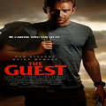
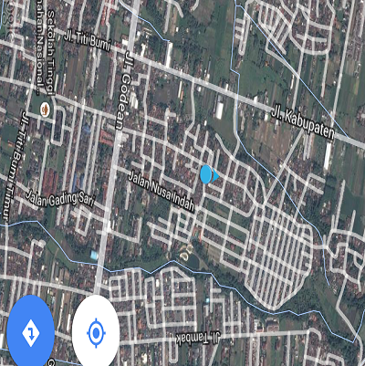

Welcome To My Blog
Blog ini adalah Blog yang saya buat untuk memenuhi tugas design web praktek.
Di dalam Blog saya ini anda bisa mengetahui informasi tentang company profil saya dan anda juga bisa mengunjungi website pribadi saya di cybercore by Agung Doni. Di sana anda bisa mendapatkan manfaat yang sangat banyak mulai dari film terbaru, game terbaru, maupun artikel artikel pengetahuan terbaru dan terupdate.
Mengenai Blog Saya
Blog Saya Adalah Sebuah Blog Yang Bergerak Di Bidang Download Film Terbaru, Game Terbaru, Info Dan Artikel-Artikel Terbaru Di Sana Anda Dapat Mendownload Berbagai Konten Dengan Mudah Dan Berkualitas Tinggi.
Tentang Education Saya

Pada menu education Saya akan membahas tentang mata kuliah design web.
Design web adalah mata kuliah yang sangat menyenangkan di kampus saya yaitu universitas teknologi yogyakarta.
Pada mata kuliah ini saya diajarkan untuk membuat dan mendesain sebuah website dari mulai nol atau bahasa astralnya dari mulai ngisor banget, dan saya mengucapkan beribu ribu terima kasih kepada dosen praktikum saya Bapak Wahyu Widodo yang telah sabar mengajari saya dari awal dan sampai akhirnya saya mulai mampu mengerti sedikit tentang website . Bila anda berminat untuk bertemu mereka silahkan kunjungi WEBSITE UTY .
Masukan buat mata kuliah design web
Tetaplah cetak bibit baru seorang pakar web baru yang nantinya akan mengharumkan nama UTY di kemudian hari dan untuk dosen desain web tetap jadilah sosok dosen yang mampu bersahabat dengan mahasiswa nya.
Valenti - Web Designer
Portofolio Atau Kegiatan Saya
Saya akan berbagi tentang kegiatan saya sedikit kepada anda hehe.
Kegiatan saya sehari hari sebenarnya kurang lebih sama dengan mahasiswa lain pada umumnya namun mungkin yang menjadi pembeda adalah pada sisi kegiatan blogging saya.
Adapun Kegiatan Saya Antara Lain
Informasi Kontak Saya
Nama Blog
www.cybercore.blogspot.com,
email adsdroid60@gmail.com, kode pos saya 55294
Alamat Jl.Godean Desa kwarasan, nogotirto, gamping, sleman, yogyakarta.
